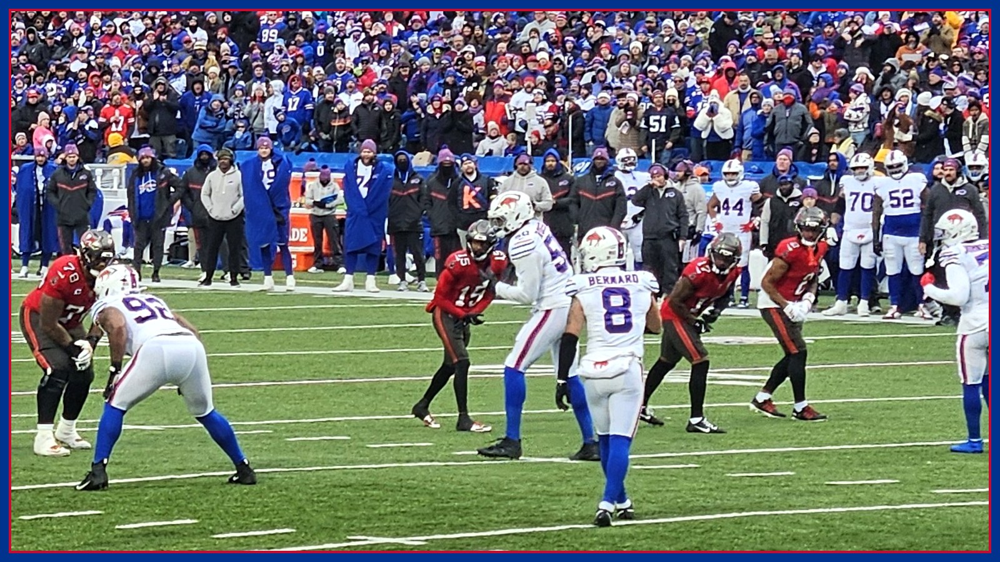

Buffalo's defense just did something no team has done since the 1985 Bears
Buffalo's 23-6 win at Minnesota came with a historic defensive line, per the Democrat and Chronicle: a second straight game with 3+ turnovers, multiple sacks, under 200 yards allowed, a sub-50% opposing QB and no passing TD — a five-part feat last matched in consecutive games by the 1985 Bears. Minnesota went 0-for-10 on third and fourth down.

Monday night was billed all week as the No. 1 offense against the No. 1 defense, and Buffalo did win that fight — just not with the unit everyone expected. The Bills beat the Minnesota Vikings 23-6 at U.S. Bank Stadium, and they did it because Jim Leonhard's defense outplayed Brian Flores'. The headline number, per the Democrat and Chronicle's nine-stats breakdown: for the second straight game, Buffalo forced at least three turnovers, recorded multiple sacks, allowed fewer than 200 total yards, held the opposing quarterback under a 50 percent completion rate and did not surrender a passing touchdown. The last NFL team to hit all five marks in consecutive games was the 1985 Chicago Bears, per the same breakdown — the 15-1 Bears, who did it in three straight games that November on their way to Super Bowl XX. Buffalo's defense is now keeping company it has no business keeping. Film Room is going to enjoy saying that out loud.
Start with the money downs, because that is where Minnesota's night died. The Vikings went 0-for-8 on third down and 0-for-2 on fourth down, per the Democrat and Chronicle — zero conversions in ten tries, all game. Minnesota finished with 178 total yards, 51 rushing yards, nine first downs and 46 offensive plays, per the same reporting and the Bills' official recap. Buffalo ran 79 plays and held the ball for 42 minutes, 32 seconds against Minnesota's 17:28. A defense does not luck into numbers like that. It wins first down, it wins the sticks, and then it simply never lets the other quarterback breathe on the one snap that matters.
The quarterback line is the ugliest part of the film, and it belongs to Carson Wentz. Starting for the injured Kyler Murray, Wentz finished 8 of 25 for 81 yards with two interceptions and a lost fumble, per the Democrat and Chronicle — an 8.9 passer rating that the paper reports is the lowest by an NFL quarterback with at least 25 attempts in a game since 2019. His first turnover was not even a normal fumble: a first-quarter throw ruled a backward pass to Justin Jefferson was overturned on Buffalo's challenge, and Greg Rousseau recovered it, per the game's live reporting. Rousseau's first half alone — a sack, three quarterback hits, a pass breakup and that recovery, per the Democrat and Chronicle — set the tone. In the third quarter, Dorian Williams intercepted Wentz at the Buffalo 11 on a deep shot to T.J. Hockenson to end Minnesota's opening drive of the half, and Terrel Bernard added a second interception later in the quarter, per the same reporting. Jefferson, the rematch storyline of the week, finished with three catches for 58 yards on 11 targets, per Reuters. Christian Benford traveled with him for much of the first half and blanked him on their first seven matchups, per the Democrat and Chronicle's report card — though Benford left for good in the third quarter with a wrist injury, a name that now tops Buffalo's watch list for Jets week.
And here is the part that should scare the rest of the AFC: Buffalo did this while its own offense was playing short-handed against the best defense in football. Left tackle Dion Dawkins (rib) and left guard Alec Anderson (ankle) were both inactive, per NBC Sports, with Tylan Grable starting at left tackle and Austin Corbett at left guard. Josh Allen was sacked four times, threw an interception and still finished 21 of 31 for 234 yards and a touchdown, per the official gamebook reporting — and afterward he credited Grable and Corbett for stepping in, per Yardbarker's postgame report. Allen's touchdown was a 25-yarder to rookie tight end Keleki Latu late in the first half, per the Democrat and Chronicle. Then James Cook closed the door the old-fashioned way: 31 carries — the most by any ball carrier in an NFL game this season, per Pro Football Talk via Yardbarker — for 107 yards and a touchdown, with nine of those carries coming on a 15-play, 84-yard drive that ate 8 minutes, 32 seconds of the fourth quarter, per the Bills' official recap. That drive is what a No. 1 offense looks like when it decides to be a defense's best friend.
The milestone watch this site ran yesterday landed, too — it just was not the story of the night. Allen (15 rushing yards, 5,006 career) and Cook (5,073 career) both passed 5,000 career rushing yards on the same third-quarter series, per Sports Illustrated, becoming the first quarterback-running back duo in NFL history to reach 5,000 as teammates in the same season, per the Bills' official recap, and the fourth and fifth players in franchise history to get there. Cook also became the first Bill ever with at least 75 rushing yards and a rushing touchdown in seven straight games — the longest such streak in the league since LaDainian Tomlinson in 2006 — and Allen's touchdown pass tied Peyton Manning's record of 322 total touchdowns through a player's first ten seasons, per the Democrat and Chronicle. Tyler Bass stayed perfect, 3-for-3 on the night, extending his franchise-record streak to 24 straight made field goals, per the same breakdown.
The honest asterisk, because Film Room keeps receipts: this two-game defensive tear has come against a Baltimore team that lost Lamar Jackson mid-game and a Minnesota team starting a backup quarterback whose starter was out with a hamstring injury. Dominance is dominance — 0-for-10 on money downs is 0-for-10 against anyone — but the level of quarterback play is part of the film, and the next month will grade this defense against healthier offenses. What is not in doubt is the shape of this team this morning. Buffalo is 7-1 for the first time since 1993, per the Democrat and Chronicle, winners of four straight, and head coach Joe Brady is 4-0 on the road to start his career — just the fifth coach this century to win his first four road games, per the same breakdown. Next up is the New York Jets on Sunday, Nov. 15 at 1 PM ET at MetLife Stadium, per the Bills' official site, with Benford's wrist and the left side of the line as the week's first questions. Two weeks ago this defense was the problem. Monday night in Minnesota, it was the headline — and it dragged a 1985 comparison out of the history books to prove it. Go Bills — and get the full Jets-week breakdown in your inbox every morning with The BNC Blitz.
The BNC Blitz is free: the day's Bills news, one stat that matters, and one take, every morning. Join to keep reading — and never miss the end of a story again.